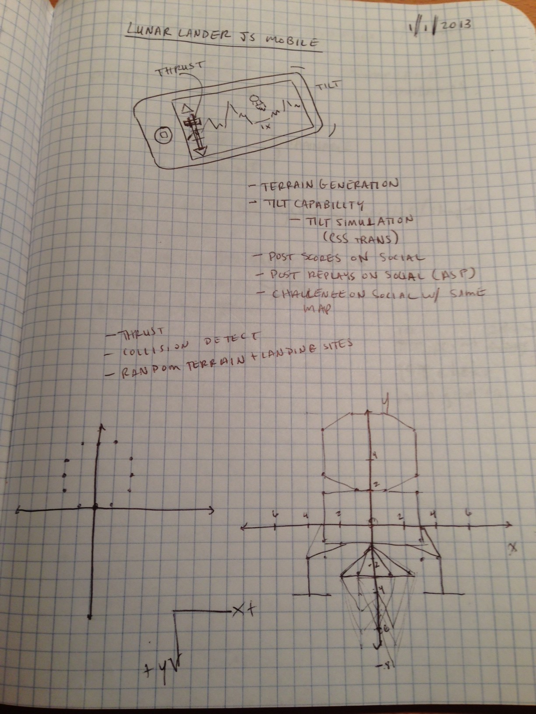
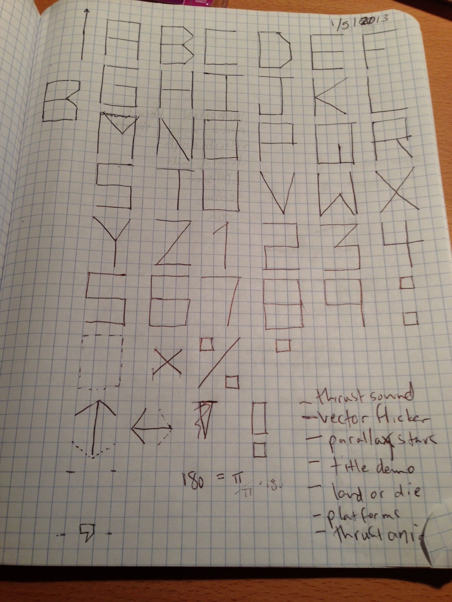
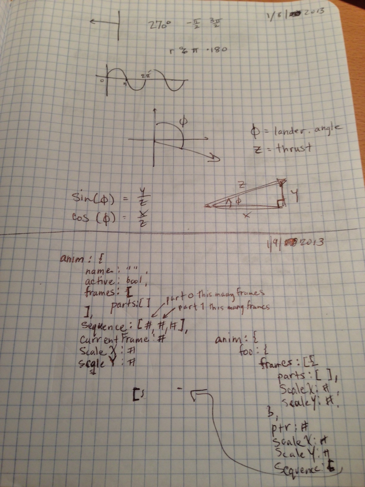
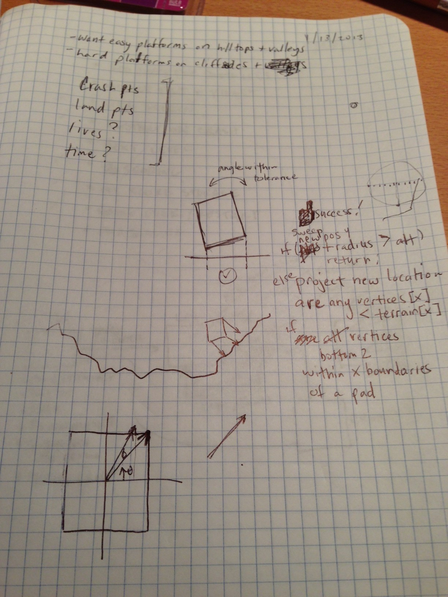
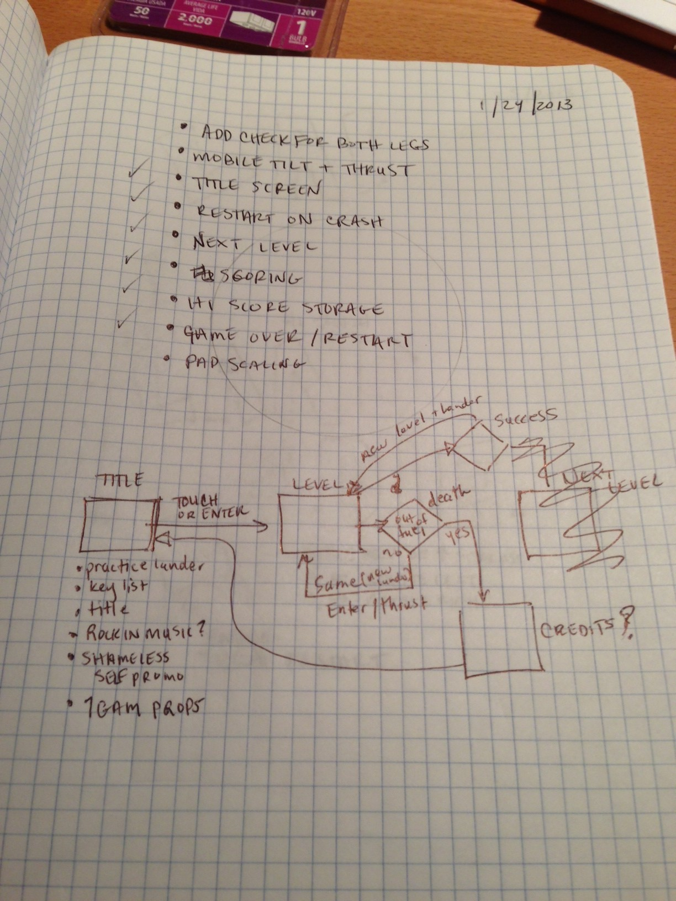
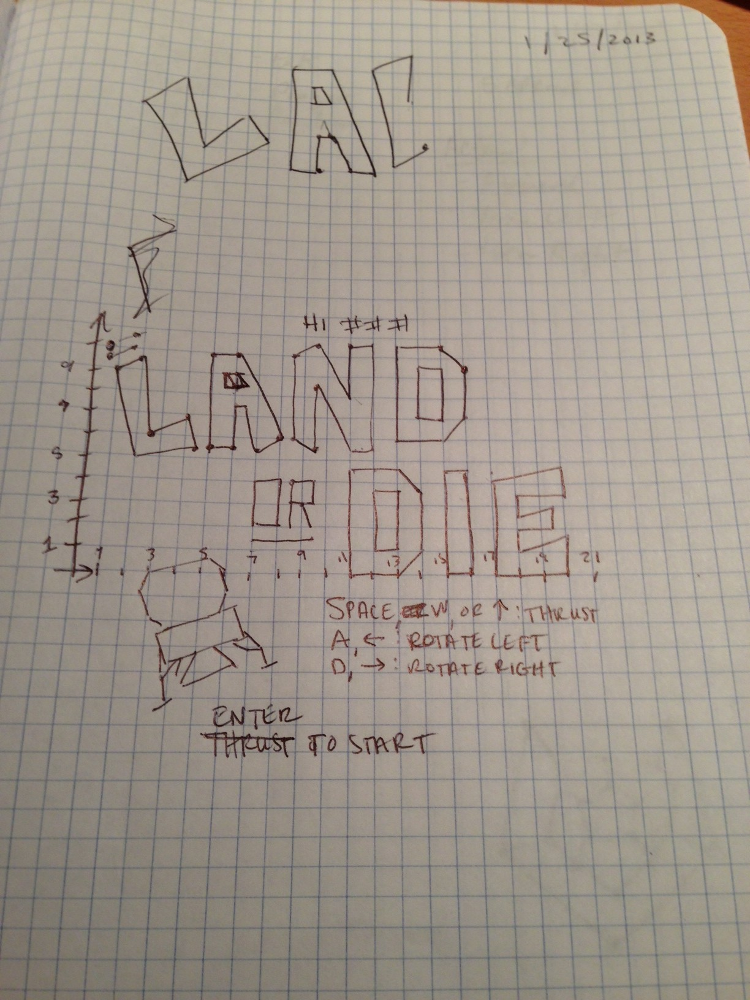

The Game
Land or Die! is a lunar lander game with dynamically generated terrain.
Source Code
PLAY IT HERE!
Rules
- Start with 500 fuel units.
- Land with and angle < 5° and a total velocity < 10.
- Rack up as many points as possible by landing with minimum rotation and speed on the largest multiplier pads.
- Crashing results in retry of the current landscape.
- Escape from the screen by flying off the top to try a different landscape at the expense of fuel.
Scoring
A small point counter increments as long as you survive. In addition, you can earn points in these ways:
- Successful Landing Bonus: 50 points x multiplier pad value
- Smooth Landing Bonus: 10 points x (10 - Velocity)
- Landing Pad Crash Bonus: 10 points
- Terrain Crash Bonus: 5 points
Development
Concept
I always wanted to participate in a weekend game jam but had neither the experience nor the discipline. OneGameAMonth (1GAM) is an excellent opportunity to commit to making a game a month, which sounds like a very difficult undertaking at a glance. However, it's organized very well and has a community and gamification system that keeps the journey inspiring, fresh, and supportive.
As a web developer, I have dabbled with some components that could be part of a game, but never followed through a game to completion. A while back, I was dabbling with believable terrain generation using a midpoint displacement algorithm. The original intent was to make a Scorched Earth clone using web technologies. I prototyped the terrain in jsfiddle. It languished there for some time.
When 1GAM came up, I thought to myself that a bit of physics and the terrain generator would make a good lunar lander game. I later discovered that the inspiration for the game, the 1979 Atari cabinet, actually had pre-determined terrain and scrolled. Initially the game was also going to be mobile friendly. I postponed that plan when I found there's no way to prevent the iOS safari browser from rotating.
Design
No images!
I decided to make the game true to its vector roots by doing all of the graphics using Cartesian coordinates and
lineToin canvas. I had also earlier created a JavaScript game loop by piecing together information from gamedev.net
The "sprites" in the game consist of an array of object. Each object has the 2d Cartesian coordinates for a part of the "sprite" along with the color for the line/path.
The lander
To make things easier on myself, the lander was drawn on graph paper with a typical algebra coordinate plane from schoolin' days. Originally, I had planned to do dynamic zooming. Because of this I envisioned the lander being very small to start. So, I made the "sprites" so that each path could be colored and made the "head" of the lander red to judge orientation.
Fonts
Fonts are basically just sprites and can be displayed in succession. The font table is a large list of paths that are turned into "sprites". I wanted to create other glyphs besides typical alpha-numerics and had issued with my shared host and unicode being delivered to the browser with the correct character encoding, so I hacked together a tag system to translate
Audio
Audio on the web is a bit of a mess. I found that there's an issue with the audio tag that makes gapless looping not function. So, I found a repo on github called Seamless loop that encapsulated all the various browser gap timings and hacked it into the game with minor modifications for volume adjustment. This was used for the engine thrust sound. The noise for the sound was created using the noise track for the popular NES sound tracker Famitracker.
For the voice, I used a text-to-speech site. I found that the Australian voice, Alan, enunciated the best.
The "music" at the start of the game was thrown together in Famitracker, as was the velocity warning.
The low fuel warning is the recognizable code red klaxon from the original Star Trek series.
Key Bindings
The keypress mechanism is a simple latching system. Keys are registered with Keys.on or Keys.off. When a keydown event is captured it's checked against the registry and latched. When the keyup event is captures it's stored in the off latch. Keys.run runs the functions registered in the latches.
Title Screen
This was pared back as well. Originally I wanted you to be able to practice the controls with the lander on the title screen.
Notes





